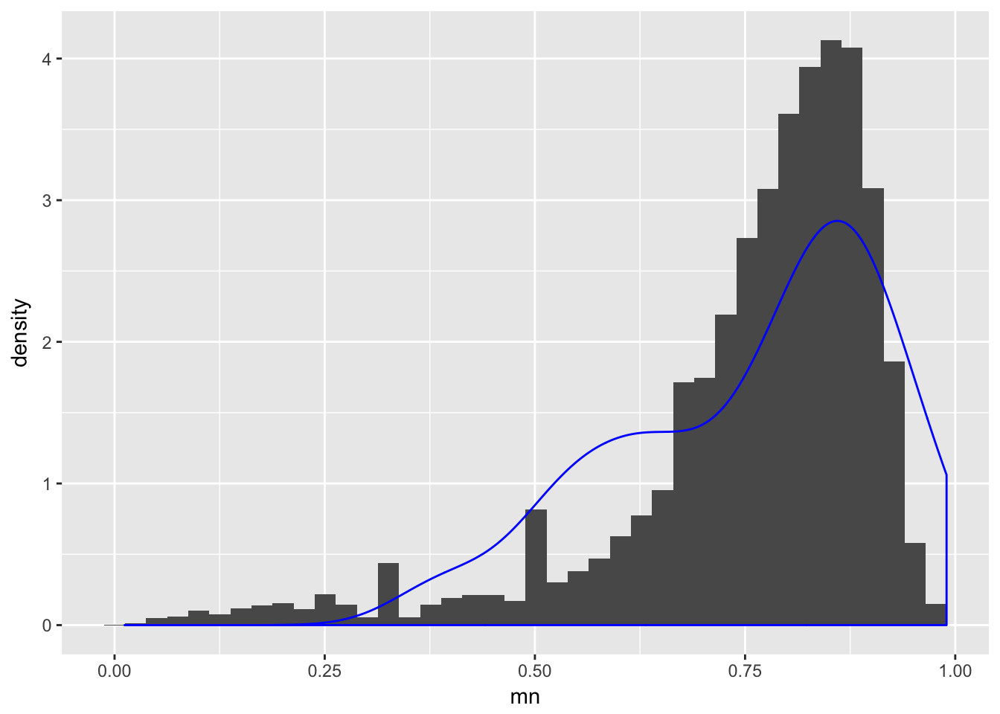
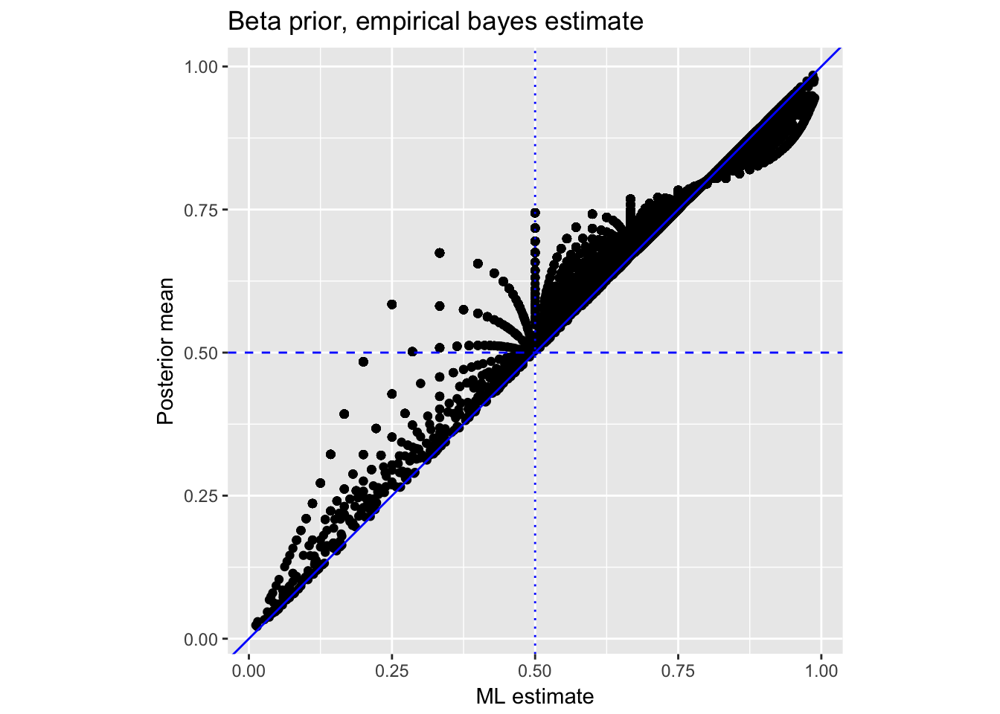

Last updated: 2017-04-20
Code version: f725a9a
The purpose of this document was to perform quantitative assessment of the difference between the counts of gene \(g\) in single cell data and the counts of gene \(g\) in bulk data. See here for Matthew’s formulation of the problem.
The challenge here is that for each gene \(g\), the total counts \(C_g = X_g^s + X_g^b\) may be too big or too small by chance. We apply two approaches that can account for this uncertainty.
Loading packages.
library(tidyr)
library(dplyr)Import the data before gene/sample filtering. (I copied these data files from our singleCellSeq project directory)
anno <- read.table("../data/annotation.txt", header = TRUE,
stringsAsFactors = FALSE)
molecules <- read.table("../data/molecules.txt", header = TRUE,
stringsAsFactors = FALSE)
reads_bulk <- read.table("../data/reads-bulk.txt", header = TRUE, stringsAsFactors = FALSE)Let’s take one replicate for now.
molecules_19101_r1 <- molecules[ ,anno$batch == "NA19101.r1"]
reads_bulk_19101_r1 <- reads_bulk[ ,grep("NA19101.r1", colnames(reads_bulk))]
# Let's compute for the single cell data, the counts of gene $g$ across all the individual cells. Compute \(X_g^{b}\) and \(X_g^s\)
counts_single <- rowSums(molecules_19101_r1)
counts_bulk <- reads_bulk_19101_r1
all.equal(rownames(counts_bulk), rownames(counts_single))[1] TRUEcounts <- data.frame(counts_single, counts_bulk)
counts <- counts[which(rowSums(counts)>0),]
dim(counts)[1] 17429 2Here I follow the methods in this blog post.
Plot the ML estimate \(\hat{p}_g = X_g^s / (X_g^s + X_g^b)\).
library(ggplot2)
ggplot(data.frame(mn = with(counts, counts_bulk/(counts_bulk + counts_single))),
aes(x = mn)) + geom_histogram(bins = 40)Exclude the outliers to get estimate a beta prior.
counts$mn <- with(counts, counts_bulk/(counts_bulk + counts_single))
counts_filtered <- counts %>%
filter(!(mn == 0 | mn == 1))Use optim to find beta prior parameters.
loglik <- function(mu, x) {
sum(-dbeta(x,mu[1],mu[2],log = TRUE))
}
fit_optim <- optim(par = c(30,20), fn = loglik,
x = counts_filtered$mn,
method = "L-BFGS-B", lower=c(0,0))
fit_optim$par
[1] 5.436891 1.845051
$value
[1] -8622.246
$counts
function gradient
16 16
$convergence
[1] 0
$message
[1] "CONVERGENCE: REL_REDUCTION_OF_F <= FACTR*EPSMCH"ggplot() +
geom_histogram(data = counts_filtered, aes(x = mn, y = ..density..), bins = 40) +
geom_density(data = data.frame(x = rbeta(100, fit_optim$par[1], fit_optim$par[2])),
aes (x = x), color = "blue")
Compute posterior mean.
alpha0 <- fit_optim$par[1]
beta0 <- fit_optim$par[2]
counts_eb <- counts_filtered %>%
mutate(eb_estimate = (counts_bulk + alpha0)/(counts_single + counts_bulk + alpha0 + beta0))Plot estimates.
counts_eb %>%
ggplot(aes(mn, eb_estimate)) +
geom_point(aes(colour = counts_bulk), colour = "black") +
geom_vline(xintercept = .5, colour = "blue", lty = 3) +
geom_hline(yintercept = .5, colour = "blue", lty = 2) +
geom_abline(intercept = 0, slope = 1, colour = "blue") +
labs(x = "ML estimate", y = "Posterior mean",
title = "Beta prior, empirical bayes estimate") +
coord_fixed(ratio = 1)Applying to filtered data
ngenes <- dim(counts_filtered)[1]
counts_filtered <- counts_filtered %>%
mutate(total = counts_single + counts_bulk) %>%
mutate(mn = counts_bulk/total) %>%
mutate(se = ngenes*mn*(1-mn))
library(ashr)
fit_ash_binom <- ash.workhorse(rep(0, ngenes),
1,
lik = lik_binom(counts_filtered$counts_bulk,
counts_filtered$total),
mixcompdist = "halfuniform")Applying to unfiltered data
ngenes <- dim(counts)[1]
counts <- counts %>%
mutate(total = counts_single + counts_bulk) %>%
mutate(mn = counts_bulk/total) %>%
mutate(se = ngenes*mn*(1-mn))
library(ashr)
fit_ash_binom <- ash.workhorse(rep(0, ngenes),
1,
lik = lik_binom(counts$counts_bulk,
counts$total))
summary(fit_ash_binom$result$PosteriorMean)Plot estimates.
counts_filtered %>%
mutate(posterior_mean = fit_ash_binom$result$PosteriorMean,
lfsr = fit_ash_binom$result$lfsr) %>%
ggplot(aes(mn, posterior_mean)) +
geom_point(aes(colour = counts_bulk), colour = "black") +
geom_vline(xintercept = .5, colour = "blue", lty = 3) +
geom_hline(yintercept = .5, colour = "blue", lty = 2) +
geom_abline(intercept = 0, slope = 1, colour = "blue") +
labs(x = "ML estimate", y = "Posterior mean",
title = "Beta prior, empirical bayes estimate") +
coord_fixed(ratio = 1)
sessionInfo()R version 3.3.0 (2016-05-03)
Platform: x86_64-apple-darwin13.4.0 (64-bit)
Running under: OS X 10.10.5 (Yosemite)
locale:
[1] en_US.UTF-8/en_US.UTF-8/en_US.UTF-8/C/en_US.UTF-8/en_US.UTF-8
attached base packages:
[1] stats graphics grDevices utils datasets methods base
other attached packages:
[1] ashr_2.1-10 ggplot2_2.2.1 dplyr_0.5.0 tidyr_0.6.0
[5] workflowr_0.4.0 rmarkdown_1.4 devtools_1.12.0
loaded via a namespace (and not attached):
[1] Rcpp_0.12.9 git2r_0.18.0 plyr_1.8.4
[4] iterators_1.0.8 tools_3.3.0 digest_0.6.12
[7] lattice_0.20-34 evaluate_0.10 memoise_1.0.0
[10] tibble_1.2 gtable_0.2.0 Matrix_1.2-7.1
[13] foreach_1.4.3 DBI_0.5-1 rstudioapi_0.6
[16] curl_2.2 yaml_2.1.14 parallel_3.3.0
[19] withr_1.0.2 httr_1.2.1 stringr_1.2.0
[22] knitr_1.15.1 REBayes_0.68 rprojroot_1.2
[25] grid_3.3.0 R6_2.2.0 magrittr_1.5
[28] whisker_0.3-2 MASS_7.3-45 backports_1.0.5
[31] scales_0.4.1 codetools_0.2-15 htmltools_0.3.5
[34] assertthat_0.1 colorspace_1.2-7 labeling_0.3
[37] stringi_1.1.2 Rmosek_7.1.2 pscl_1.4.9
[40] lazyeval_0.2.0 munsell_0.4.3 doParallel_1.0.10
[43] truncnorm_1.0-7 SQUAREM_2016.8-2 This R Markdown site was created with workflowr